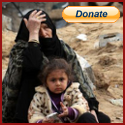

Donate For A Good Cause
The war in Libya has started. What armies and dictators call 'collateral victims', we call fathers, mother and kids! What are we prepared to do? Help them in the best way we can. They need food, medicine, shelter and HOPE! We can bring back the hope for better days.
Only a little small change of you saves a lot of lives in the stricken area. Money collected here is to be delivered to the stricken area through the aid group in Libya.